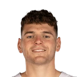
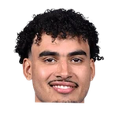

“He’s excited to be on a team with vets like Dame and Jrue, and he loves the young talent of Deni (Avdija), Scoot, (Donovan) Clingan, (Toumani) Camara … I mean, he mentioned them all by name,”

What NBA players and coaches have said about Donovan Clingan
5 quotes about Donovan Clingan from 5 players, coaches and executives, newest first. Each one links to its original source.
Best quotes
Deandre Ayton on Donovan Clingan:
“He's a beast. He's hard to move out of the paint. I don't care how young he is, that's a big dude. He knows how to use his body. He's a sacrificial dude. Literally everything he does is for the team. There's nothing selfish about that kid. He's keeping up with the running, too. We've been working his ass a little bit, but he's been keeping up. He's not backing down at all. That dude's a true winner.”
Scoot Henderson on Donovan Clingan’s last game:
“I was in awe the whole time. I was like a fan out there. DC’s making big strides. Rookie of the Year in my opinion. A lot of bigs in the league can’t do what he does.”
What Donovan Clingan has said about other players and coaches →
Quotes per season
Who talks about Donovan Clingan most
 Deandre Ayton1 quote
Deandre Ayton1 quote- Joe Cronin1 quote

Justin Minaya1 quote- Micah Nori1 quote
 Scoot Henderson1 quote
Scoot Henderson1 quote
2026-27
1 quote“He’s excited to be on a team with vets like Dame and Jrue, and he loves the young talent of Deni (Avdija), Scoot, (Donovan) Clingan, (Toumani) Camara … I mean, he mentioned them all by name,”
2024-25
3 quotesScoot Henderson on Donovan Clingan’s last game:
“I was in awe the whole time. I was like a fan out there. DC’s making big strides. Rookie of the Year in my opinion. A lot of bigs in the league can’t do what he does.”
Deandre Ayton on Donovan Clingan:
“He's a beast. He's hard to move out of the paint. I don't care how young he is, that's a big dude. He knows how to use his body. He's a sacrificial dude. Literally everything he does is for the team. There's nothing selfish about that kid. He's keeping up with the running, too. We've been working his ass a little bit, but he's been keeping up. He's not backing down at all. That dude's a true winner.”
Justin Minaya on his first impressions of Donovan Clingan:
“Really good. I can see why UConn was so good with him. He can spread the floor. I was really surprised by his passing.”
Justin Minaya on Donovan ClinganTwitter @highkin
2023-24
1 quoteJoe Cronin on Donovan Clingan:
“A player we had ranked very, very highly.... The defensive prowess that he brings.”